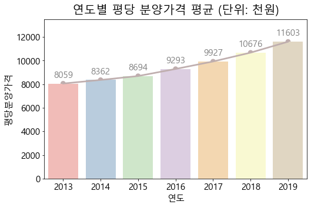
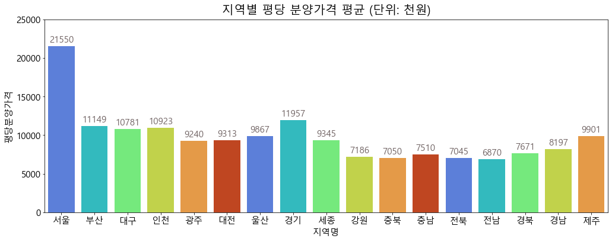
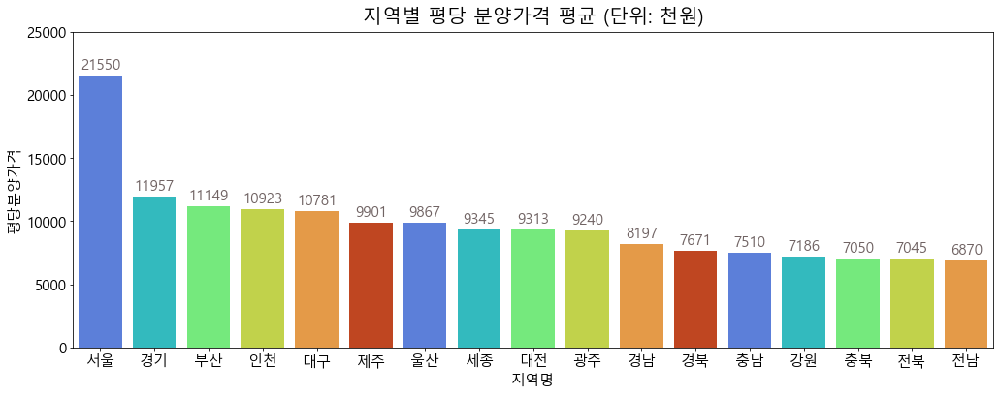

분양가란 처음 분양을 시작할 때의 가격을 말합니다. 이번 데이터 분석에서는 2013년부터 2019년도까지의 전국 신규 민간 아파트 분양가격 데이터를 사용하여 아파트 분양가를 연도, 지역 별로 분석해보면서 부동산 가격 변동 추세를 알아봅니다.
* 인프런, 전공 수업시간에 진행한 내용을 토대로 가설 설정과 해석, 시각화 디자인을 재구성한 글입니다.
0. 라이브러리
import sysprint('python', sys.version)import numpy as npprint('numpy', np.__version__)import pandas as pdprint('pandas', pd.__version__)import matplotlib as mplprint('matplotlib', mpl.__version__)import matplotlib.pyplot as pltimport seaborn as snsprint('pandas', sns.__version__)import matplotlib.pyplot as pltplt.rc("font", family="Malgun Gothic", size=15) # 결과 확인을 용이하게 하기 위한 코드from IPython.core.interactiveshell import InteractiveShellInteractiveShell.ast_node_interactivity ='all'# 경고 메시지 무시.import warningswarnings.filterwarnings("ignore")
python 3.7.3 (default, Mar 27 2019, 17:13:21) [MSC v.1915 64 bit (AMD64)]
numpy 1.21.6
pandas 1.2.0
matplotlib 3.3.2
pandas 0.11.1
평당분양가격에 결측값이 9개 있는 것을 확인하였습니다. 시각화 정보전달의 목적이므로 결측값 처리는 진행하지 않고, 어떤 데이터에 결측값이 있는지 알아보겠습니다.
df[df['평당분양가격'].isnull()]
지역명
연도
월
평당분양가격
3265
울산
2018
12
NaN
3350
울산
2019
1
NaN
3435
울산
2019
2
NaN
3520
울산
2019
3
NaN
3605
울산
2019
4
NaN
3690
울산
2019
5
NaN
3775
울산
2019
6
NaN
3860
울산
2019
7
NaN
3945
울산
2019
8
NaN
울산 지역에서 2018년도부터 데이터가 존재하지 않는 것으로 보입니다. 이 데이터셋(2013~2019)에서 울산 지역의 최신 데이터는 없는 것을 감안하고 분석을 진행하도록 합니다.
4. 가설 설정
1 ) 연도별 분양가격 동향 - 지속적으로 분양가격이 증가 할 것이다.
2 ) 지역별 분양가격 - 수도권 근방의 분양가격이 높을 것이다.
3 ) 지역별 연도별 분양가격 - 특정 지역의 연도별 분양가격이 증가할 것이다.
먼저 연도별로 분양가격을 분석해보고 분양가격의 추이를 살펴봅니다. 그 다음 지역 별로 분양가격을 분석하여 각 지역의 평균 분양가격을 파악하고, 어느 지역의 분양가격이 높고 낮은지 확인합니다. 마지막으로 지역별 연도별로 시각화를 진행하고, 특정 지역의 어느 연도에서 증가 추세를 띄는지, 동향이 어떻게 되는지 분석합니다.
5. 데이터 시각화 분석
5.1 연도별 분양가격 분석
5.1.1 연도별 평당분양가격
연도 별 평당분양가격의 평균을 그려봅니다.
barplot + pointplot
_=plt.figure(figsize=(8, 5))_=plt.title("연도별 평당 분양가격 평균 (단위: 천원)", fontsize=20, pad=10)bars=sns.barplot(data=df, x='연도', y='평당분양가격', ci=None, palette=sns.color_palette("Pastel1"))_=sns.pointplot(data=df, x="연도", y="평당분양가격", ci=None, color='#bfaeae')for i, b inenumerate(bars.patches): _=plt.text(b.get_x()+b.get_width()*(1/2),b.get_height()+500, \round(b.get_height()),ha='center',fontsize=15, color='grey')_=plt.ylim(0, 13500)

2013년도부터 2019년도까지 평당 분양가격의 평균을 시각화해보았더니 지속적으로 증가하는 추세를 보였습니다.
연도별 월별로 평당 분양가격의 평균 시각화를 그려보았을 때, 대체적으로 연초보다는 연말에 분양가격이 높은 것으로 보입니다.
5.2 지역별 분양가격 분석
5.2.1 지역별 평당 분양가격
baplot
_=plt.figure(figsize=(17, 6))_=plt.title("지역별 평당 분양가격 평균 (단위: 천원)", fontsize=20, pad=10)bars=sns.barplot(data=df, x='지역명', y='평당분양가격', ci=None, palette=sns.color_palette("turbo"))for i, b inenumerate(bars.patches): _=plt.text(b.get_x()+b.get_width()*(1/2),b.get_height()+500, \round(b.get_height()),ha='center',fontsize=15, color='#706363')_=plt.ylim(0, 25000)

서울의 분양가가 압도적으로 높은 것을 확인할 수 있습니다. 더 직관적으로 지역별 집값을 확인해보기 위해 내림차순으로 sorting 하여 그려보도록 하겠습니다.
_=plt.figure(figsize=(17, 6))# order에 사용 할 시리즈 생성 sr1_order = df.groupby("지역명")["평당분양가격"].mean().sort_values(ascending=False)_=plt.title("지역별 평당 분양가격 평균 (단위: 천원)", fontsize=20, pad=10)bars=sns.barplot(data=df, x='지역명', y='평당분양가격', ci=None, palette=sns.color_palette("turbo"), order=sr1_order.index)for i, b inenumerate(bars.patches): _=plt.text(b.get_x()+b.get_width()*(1/2),b.get_height()+500, \round(b.get_height()),ha='center',fontsize=15, color='#706363')_=plt.ylim(0, 25000)

서울-경기-부산-인천 등의 순으로 분양가가 높고, 전남-전북-충북 지역의 분양가가 가장 낮은 것으로 나타납니다.
서울지역의 연도별 boxplot을 그려보았을 때, 이상치는 존재하지 않습니다. 또, 값을 살펴보면, 위에서 전체 지역의 연도별 평당분양가격의 boxplot에서 이상치로 나왔던 값들이 서울 지역의 값들인 것을 직접 확인할 수 있습니다.
6. 분석결과 요약
4번에서 설정했던 가설을 토대로 시각화 분석 결과를 요약합니다.
1 ) 연도별 분양가격 동향 - 지속적으로 분양가격이 증가한다.
2 ) 지역별 분양가격 - 수도권 근방, (서울, 경기도, ..) 광역시 (대구, ..)의 분양가격이 높다. 특히 서울은 다른 지역의 2배 정도의 분양가임을 확인하였다.
3 ) 지역별 연도별 분양가격 - 대체적으로 모든 지역에서 연도마다 지속적으로 분양가가 증가해왔다.
전국의 분양가격 데이터로 시각화 분석을 진행하였습니다. 분양가격의 동향을 연도별, 지역별로 확인하였고, 어느 지역의 분양가가 높은지 정보를 얻을 수 있었습니다. 시각화 분석 과정에서 전체 지역에서는 이상치로 나왔던 값들이 서울 지역의 보편적인 값이라는 점을 확인하였고, 이를 통해 이상치를 섣불리 삭제해서는 안 되고, 값을 분석해 본 후에 처리해야 한다는 것을 배웠습니다.